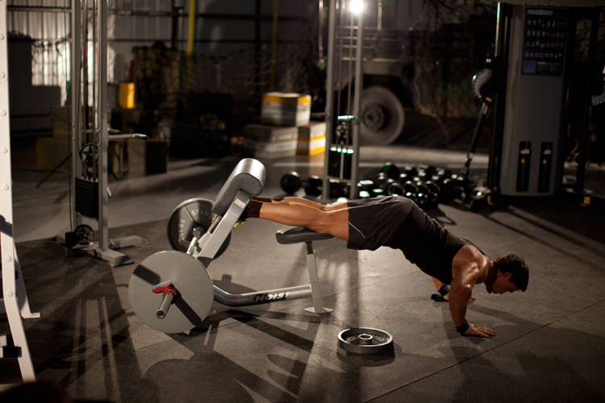

- Using the leg pad of a lat pulldown machine or a preacher bench, position yourself so that your ankles are under the pads, knees on the seat, and you are facing away from the machine. You should be upright and maintaining good posture.
- This will be your starting position. Lower yourself under control until your knees are almost completely straight.
- Remaining in control, raise yourself back up to the starting position.
- If you are unable to complete a rep, use a band, a partner, or push off of a box to aid in completing a repetition.